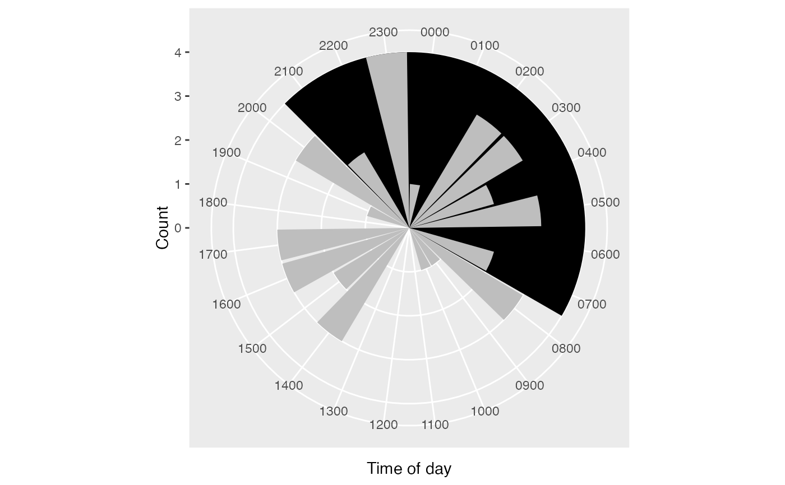
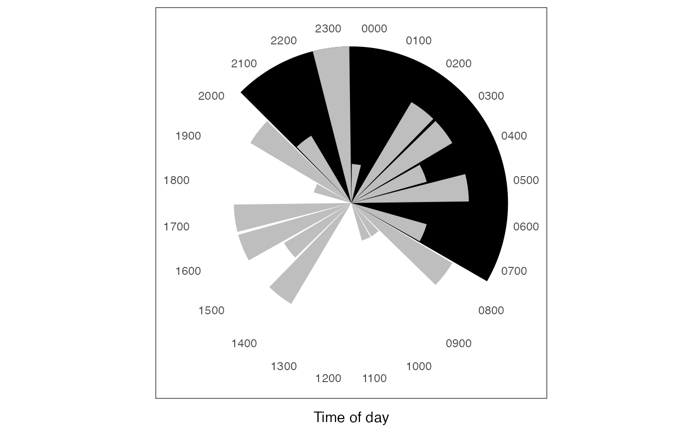
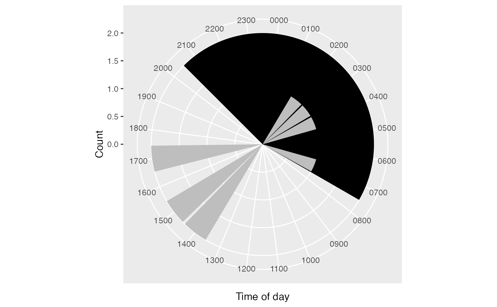
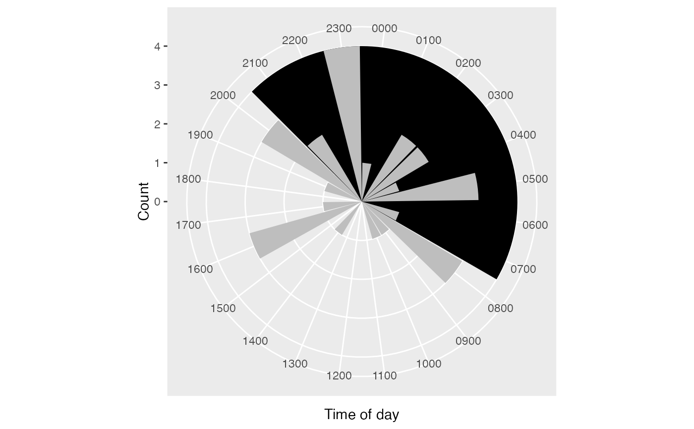
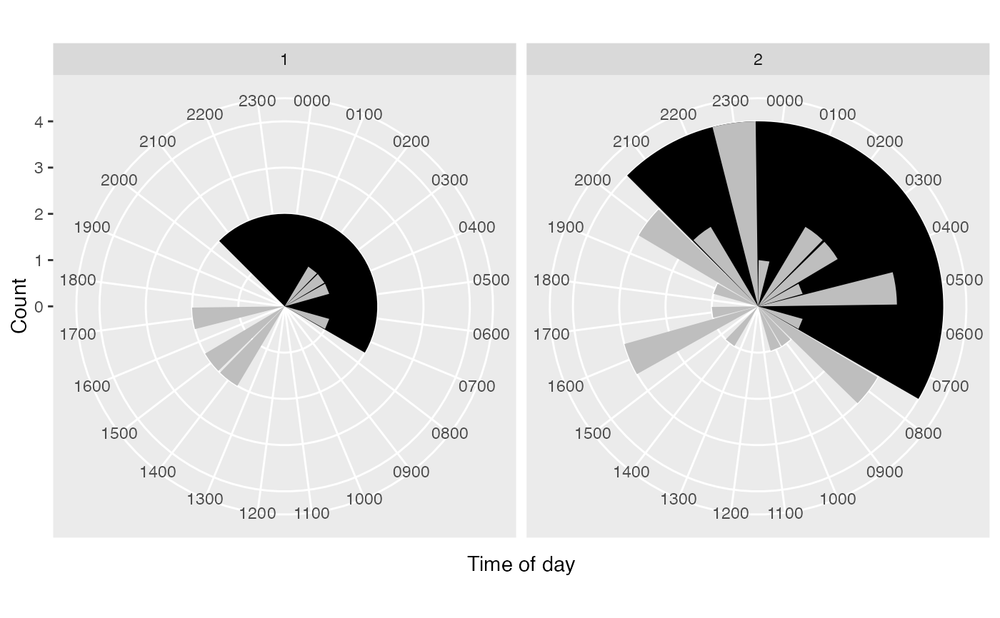
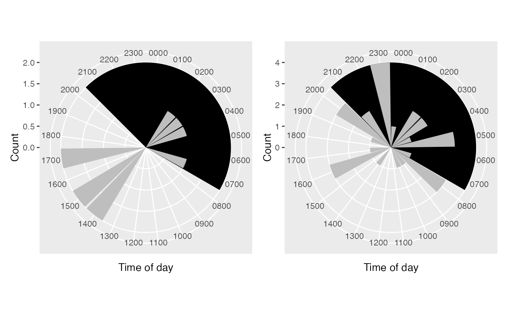

fab_tod.RdIn a normal setting it may be that observations that occur at night are
indicative of data fabrication. fab_tod (short for fabrication, time
of day), produces a plot that may help to identify problems. Customs vary in
different countries, so that should be accounted for when interpreting these
figures.
data frame containing var (and, optionally, by) variable(s)
string. Name of variable containing relevant datetimes
string. Name of variable denoting grouping
format for day of week
output format facet combines figures via ggplot2::facet_wrap,
list returns a list of ggplot2 plots
colour to use for the region indicating possible fabrication
x coordinates for the start and end of the region indicating possible fabrication
colour to use for bars indicating counts
list or ggplot2 object
Due to a limitation of faceting plots with polar coordinates, faceted plots all have the same y coordinate (equivalent to fixed axes). To free the coordinate system, use the list output (default) and wrap them together using e.g. patchwork, possibly applying some customizations in advance.
set.seed(234)
dat <- data.frame(
x = lubridate::ymd_h("2020-05-01 14") + 60^2*sample(0:20, 40, TRUE),
by = c(rep(1, 10), rep(2, 30))
)
dat %>% fab_tod("x")

dat %>% fab_tod("x") + theme_kpitools()

dat %>% fab_tod("x", "by")
#> $`1`

#>
#> $`2`

#>
#faceted of plots
dat %>% fab_tod("x", "by", output = "facet")

#with patchwork
patchwork::wrap_plots(dat %>% fab_tod("x", "by"))
